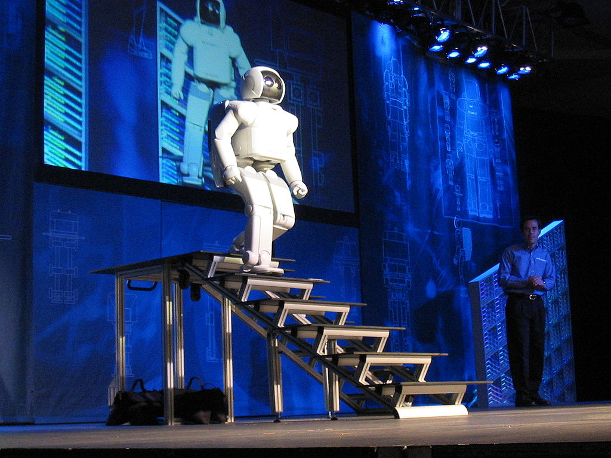

is a branch of computer science. Much of the literature defines artificial intelligence as: “the study and design of intelligent customers. ” An intelligent customer is a system that understands its environment and takes positions that increase its chance of success in achieving its mission or team mission.
This definition, in terms of goals, actions, perception, and environment is due to Russell & Norvig (2003) and other definitions also include knowledge and learning as additional criteria. Computer scientist John McCarthy originally coined the term in 1956, and himself defined it as "the science and engineering of making intelligent machines". Andreas Kaplan and Michael Heinlein define artificial intelligence as “the ability of a system to correctly interpret external data, learn from that data, and use that knowledge to achieve specific goals and tasks through flexible adaptation.”
